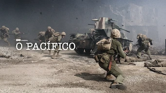

O Pacífico

Elenco: James Badge Dale,Joseph Mazzello, Outros
Emissora original: HBO
Primeiro episódio: 14 de março de 2010
Prêmios: Prêmio Emmy do Primetime: Melhor Minissérie
Gênero: Variados
2010 - 1 Temporada HD
16 Anos: Conteúdo sexual, Violência
História:
A série acompanha a jornada de três membros do Corpo de Fuzileiros Navais dos Estados Unidos, desde a primeira batalha contra o Japão, em Guadalcanal, até seu retorno após o grande triunfo que deu fim à Segunda Guerra Mundial.
Elenco: James Badge Dale,Joseph Mazzello, Outros
Emissora original: HBO
Primeiro episódio: 14 de março de 2010
Prêmios: Prêmio Emmy do Primetime: Melhor Minissérie
Gênero: Variados